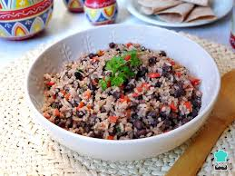

Gallo Pinto

Lista de Ingredientes
- 3 tazas de arroz cocido
- 3 cucharadas de aceite
- 1/4 de cebolla picada
- 3 tazas de frijoles negros cocidos
- 2 cucharadas de culantro picado
- 1/2 de chile ducle picado
Intrucciones:
- calienta el aceite en un sarten y cocina la cebolla y el chile dulce hasta que esten con textura suave
- Agrega los frijoles previamente cocinados, y cocina por 3 o 5 minutos. Hay que agregar un poco del caldo cuando se cocine
- Incorporar el arroz y sigue cocinando por otros 3 minutos y agrega un poco mas del caldo de los frijoles
- Al final agregale las cucharadas de culantro picado
Informacion nutricional
- 281 g contienen 375 calorias
- 11.3g de grasas
- 57.2g de carbohidratos
- 12.5g de proteina
Video tutorial